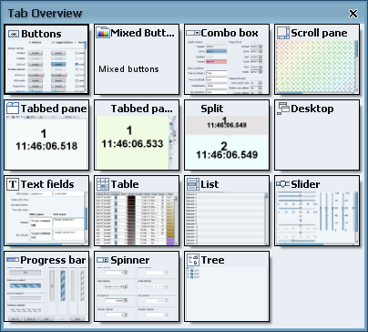

New modes for tab overview dialog
Two new modes have been
added
to the tab overview dialog, both
based on the code written by Nigel Hughes
and contributed under Apache license. By default, the tab overview button will
show the regular grid overview dialog. To show the new carousel functionality,
override the public TabOverviewKind getOverviewKind(JTabbedPane tabPane)
method of TabPreviewPainter or DefaultTabPreviewPainter
and return either TabOverviewKind.ROUND_CAROUSEL or
TabOverviewKind.MENU_CAROUSEL.
Here is how the tab overview dialog looks like under the
the TabOverviewKind.ROUND_CAROUSEL kind:
Here is how the tab overview dialog looks like under the
the TabOverviewKind.MENU_CAROUSEL kind:
Here is a Flash movie of the TabOverviewKind.ROUND_CAROUSEL tab overview:
Here is a Flash movie of the TabOverviewKind.MENU_CAROUSEL tab overview:
Improving grid tab overview mode
The existing grid tab overview panel is enhanced to provide better visuals.
Here is how it looked in the previous release:

Here is how it looks under this release:
The main improvement is the drop shadow borders (using the Looks implementation) on the individual thumbnail previews. In addition, the following shows what happens when you move the mouse over the grid:
Support for ghost effects under other LAFs
The support for ghost effects (configurable via
FadeKind.GHOSTING_BUTTON_ROLLOVER and
FadeKind.GHOSTING_BUTTON_PRESS) has been
moved
to the laf-widget project and is now available for interested third-party LAFs.
There are two options to add this functionality, manual and automatic.
Adding the ghost effects manually:
For icon ghosting in the button bounds, call
GhostPaintingUtils.paintGhostIcon(graphics, (AbstractButton) c, iconRect);
in ButtonUI.paintIcon before calling the
super implementation.
For icon ghosting outside the button bounds and press ghosting, call
GhostPaintingUtils.paintGhostImages(c, g);
in the relevant UI.update of the
PanelUI,
ToolbarUI,
MenuBarUI and so on. Don't forget to handle the
following cases: delegate doesn't exist at all, delegate exists but doesn't override the
specific method, delegate exists and overrides the specific method.
The last thing is to initiate the animation itself. For this, look at the
org.jvnet.lafwidget.ghost.GhostFadeWidget
and the way it installs two listeners on the button. One is on the button model
which tracks the changes to rollover and pressed state, initiating the animation
sequence. Another is on the button itself, tracking changes to the button model
(when you set another model on the button, the listeners on the old one are unwired
and another listener is wired on the new model).
Since the animations are performed on a separate thread, this thread needs to be stopped
when the specific LAF is unset. You can do this in calling
***LookAndFeel.uninitialize by
calling TrackableThread.requestStopAllThreads() API.
Failing to do so may result in improper behaviour of application on disposing the last
open window - VM will not exit.
Adding the ghost effects automatically:
There are two ways to "inject" this functionality into the look and feel delegates:
- Java classes with
main()methods that change existing binary UI delegates. Anttasks that change existing binary UI delegates.
The batch scripts in this CVS
folder (look for augment-*.bat) show how an existing third-party LAF can be
augmented with ghosting image effects. There are two separate classes, one injecting the
functionality in icon-painting method in a specific UI delegate, and another injecting the
spilling functionality in the update() method in a specific UI delegate.
The Ant tasks allow injecting this functionality at build time. Here is
the relevant snippet from Substance
build script:
<taskdef name="icon-ghosting-augment"
classname="org.jvnet.lafwidget.ant.AugmentIconGhostingTask"
classpath="${substance.lib.dir}/laf-widget.jar;
${substance.lib.dir}/asm-all-2.2.2.jar" />
<taskdef name="container-ghosting-augment"
classname="org.jvnet.lafwidget.ant.AugmentContainerGhostingTask"
classpath="${substance.lib.dir}/laf-widget.jar;
${substance.lib.dir}/asm-all-2.2.2.jar" />
<!-- Icon ghosting augmentation -->
<icon-ghosting-augment verbose="true">
<classpathset dir="${substance.output.dir}" />
<iconghosting className="org.jvnet.substance.SubstanceButtonUI"
methodName="paintIcon" />
<iconghosting className="org.jvnet.substance.SubstanceToggleButtonUI"
methodName="paintIcon" />
</icon-ghosting-augment>
<!-- Container ghosting augmentation -->
<container-ghosting-augment verbose="true">
<classpathset dir="${substance.output.dir}" />
<containerghosting className="org.jvnet.substance.SubstanceDesktopPaneUI"
toInjectAfterOriginal="true" />
<containerghosting className="org.jvnet.substance.SubstanceMenuBarUI"
toInjectAfterOriginal="true" />
<containerghosting className="org.jvnet.substance.SubstanceMenuUI"
toInjectAfterOriginal="true" />
<containerghosting className="org.jvnet.substance.SubstancePanelUI"
toInjectAfterOriginal="true" />
<containerghosting className="org.jvnet.substance.SubstanceScrollBarUI"
toInjectAfterOriginal="true" />
<containerghosting className="org.jvnet.substance.SubstanceToolBarUI"
toInjectAfterOriginal="true" />
</container-ghosting-augment>
The following Flash videos show icon ghosting (rollover) and press ghosting effects on the same application under different look and feels. Note that for demo purposes it uses larger icons and high-contrast implementation (high initial values for the fade out).
Here is how it looks under the InfoNode:
Here is how it looks under the Liquid:
Focus looping animation
The new FadeKind.FOCUS_LOOP_ANIMATION
fade kind allows providing looping animation on focus rings. Here is a clip of
looping focus painting under various Substance
focus kinds: